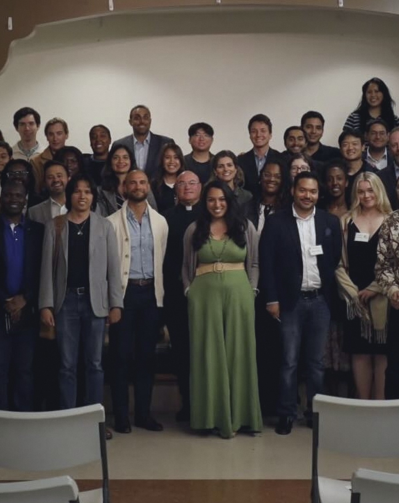
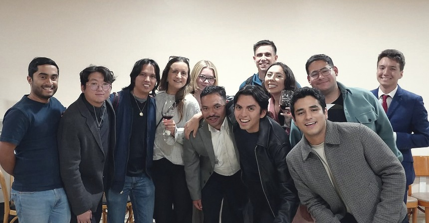
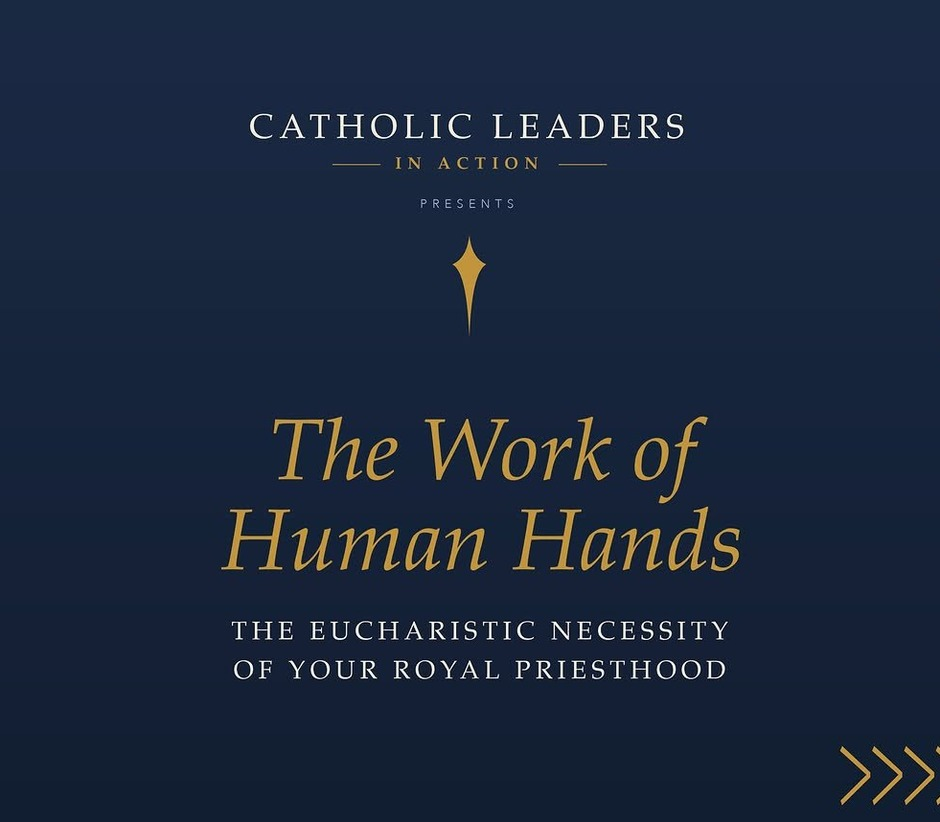
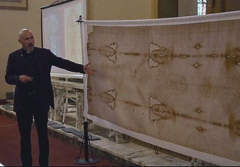
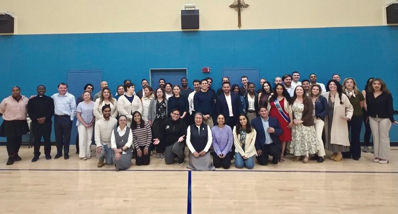
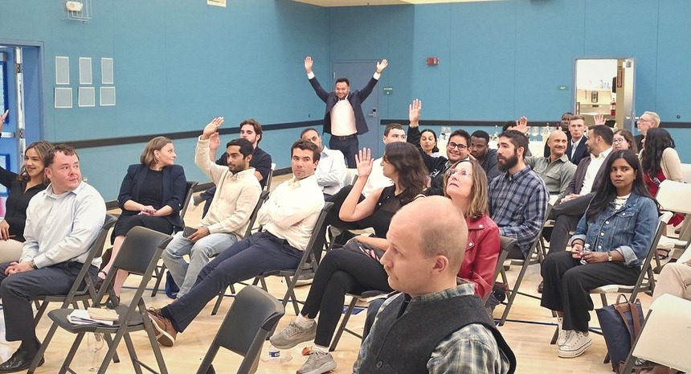
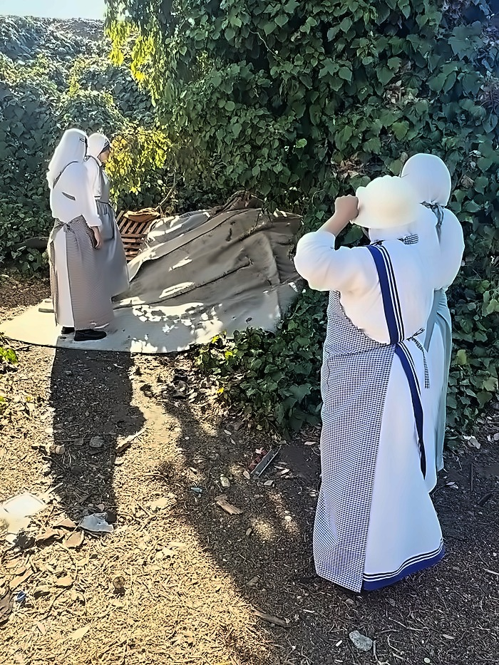
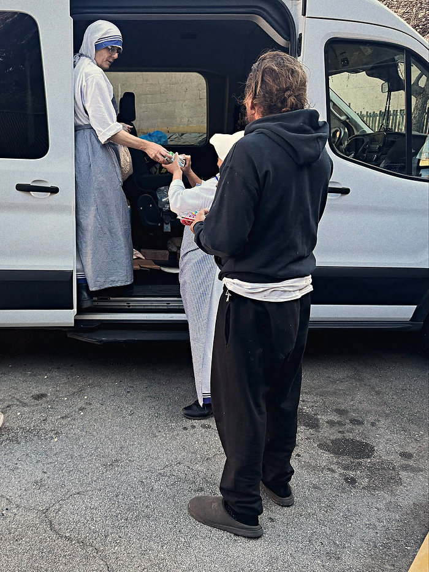
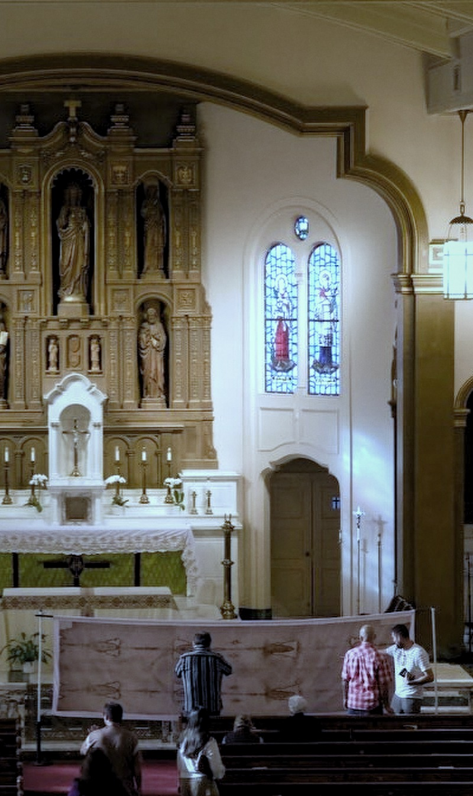

CATHOLIC SOCIAL TEACHING · SAN FRANCISCO
Catholics.
Who intend.
To lead.
WHAT THIS IS
Seven evenings on Catholic social teaching, one a month. Ages 21 to 40.
- 016:30Wine and bites
- 027:00Keynote and questions
- 039:00Reception
- 049:30Ends

FIFTH OF SEVEN
SEP 1TUESDAY 2026
The Work of Human Hands
- DATE
- TIME
- 6:30–9:30 PM
- PLACE
- St Philip the Apostle Church Hall, 725 Diamond St
- SPEAKERS
- Fr. Michael Sweeney OP · Sean Bryan

RSVP on Luma ↗THE RECORD
Four evenings held.
JUNE 2, 2026 Called to Lead JULY 7, 2026 Rights and Responsibilities 
JULY 30, 2026 ¿Quién es el hombre de la Sábana Santa? The man of the ShroudAUGUST 5, 2026 Called to Serve

Room · August 5 Panel · August 5 
Questions · August 5
WHO RUNS IT
Four founders.
One chaplain.
- Saul PerezFounder · Archdiocese
- Jessica GlennonFounder
- Daniel RamirezFounder
- Jerry Sharp IIIFounder
- Fr. Tom MartinChaplain · Noe Valley
Handoff · August 29 
Arriving · August 29 
Van · August 29 Camp · August 29
IN PARTNERSHIP WITH
- Office of Human Life & Dignity
- California Catholic Conference
- Catholic Charities SF
- Order of Malta
- Lay Mission Institute
- St. Anthony Foundation

Every generation inherits a culture. Few choose to shape it.
NEXT STEP
Take a seat.
The last three evenings sold out.
Do I have to be Catholic?
Nothing in the published listings says you must be. Ask on Instagram before registering.
What does it cost?
The lecture evenings have been free. The Shroud evening was $10. Check the Luma listing for your date.